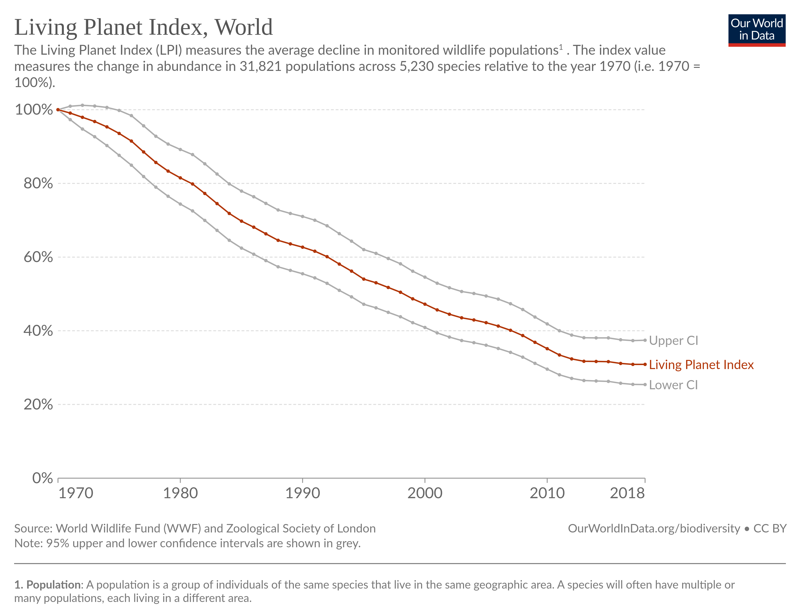

4 THE FUTURE OF OUR WORLD - NATURE
| Dyre Haugen |
| 26 December 2022 |
Wild mammal biomass has declined by 85% since the rise of humans.
The Living Planet Index tells us that studied animal populations have seen an average decline of 68% since 1970.
We are headed for The 6th Mass Extinction
4.3 Land Degradation
In the last 30 years, humans have cut down 420 million hectares of forest. That’s an area larger than the European Union.
Between 20-40% of the global land area is degraded or degrading. (jason Hickel toot ref UNCCD)
Of nine planetary boundaries used to define a ‘safe operating space for humanity’, four have already been exceeded: climate change, biodiversity loss, land use change, and geochemical cycles.
(UNCCD Global Land Outlook 2022)
4.5 Figures
4.5.1 Mass Extinction

Fig: The Living Planet Index tells us that studied animal populations have seen an average decline of 68% since 19705